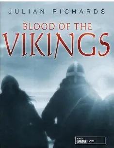

The genetics
Population genetics is central to this documentary. The series was built around a 15-month study, led by geneticist David Goldstein of University College London, that sampled the DNA of 2,500 men across Britain and compared it with samples from Scandinavia. The study set out to answer a question that history and archaeology alone could not: whether the Vikings simply raided or settled. It found Norwegian genetic heritage concentrated in parts of Cumbria, around Penrith, in Shetland and Orkney and in the far north of mainland Scotland, and it suggested that Celtic heritage persisted in southern England after the Anglo-Saxon settlement, with men in mainland Scotland showing a similar Celtic proportion. The series is an early example of television using genetic ancestry research to tell national history, and geneticists appear as investigators of the past rather than as manipulators of life.
The story
Blood of the Vikings is a five-part BBC documentary series, broadcast in 2001 and presented by archaeologist Julian Richards, that traces the legacy of the Vikings in the British Isles. Its episodes, "First Blood", "Invasion", "The Sea Road", "Rulers" and "The Last of the Vikings", combine history and archaeology with the results of a genetic survey commissioned for the programme. A team at University College London led by Professor David Goldstein collected mouth swabs from 2,500 male volunteers in 25 locations across Britain and compared them with DNA from people in Scandinavia, to estimate how many Vikings stayed and settled after the raids. The series also uses clips from the 1958 film The Vikings to illustrate popular images of the Vikings.